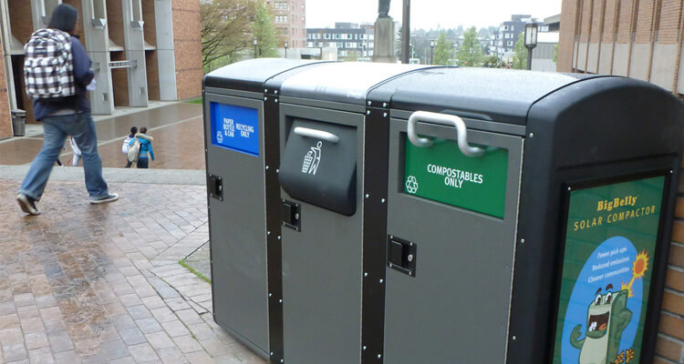
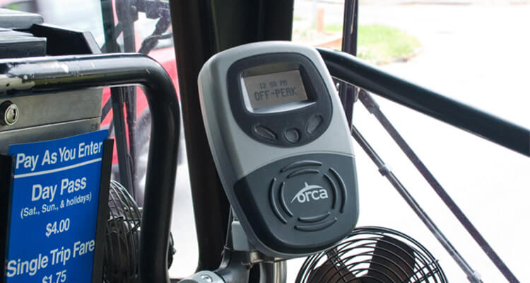
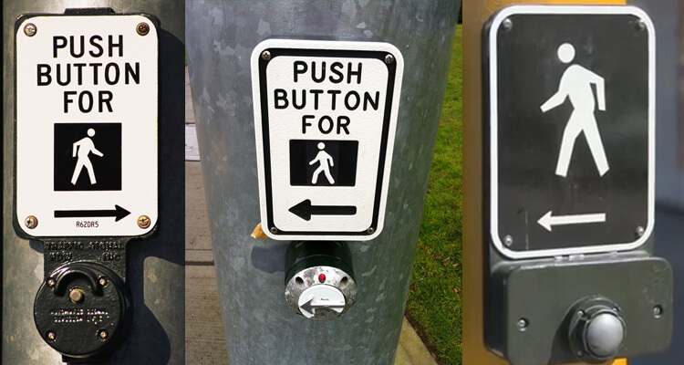

Putting on my "designer's eyes"
In a recent blog post, I talked about the importance of having your own design principles, and how it can effectively help judge the design of everything you stumble across. I also laid out my own list of 10 design principles which serve as a mental framework through which I analyze different designs. While not meant to be a hard rubric, they have definitely strengthened the validity and constructiveness of my critique.
I thought it would be a good idea to bring these principles to practice with some real-life examples. As such, I've spent the past week documenting and reflecting on the design of numerous different items that I interacted with, and how my experience using them unfolded. Very carefully, I tried to incorporate a number of important questions into my analysis. Did my experience breakdown? Why or why not? When the experience was successful, what properties of the design made it so? When the experience was unsuccessful, did I employ workarounds to achieve my goal some other way? These are just some of the questions I asked as I went about observing my interaction with everyday things.
The first five
Through my observations, seven items specifically stood out to me. For the first five objects, I will briefly summarize my experience interacting with them.
Landfill/Recycle/Compost bins around Seattle
I use these bins everyday. One of the things I love about their design is the consistency embedded in every single aspect of their creation. From the icons, the colors, the descriptive text assigned to each bin etc. This sense of consistency allows me to immediately recognize their presence and purposes as soon as I see them. I don’t have to spend a lot of time thinking about their usage, and never have I spent more than a single second to think about which bin should receive which specific pieces of garbage I have.
Personally, I've always felt mindblown when thinking about how effective Seattle's garbage bins have been in informing people to throw stuff into the right place
Amazon Kindle mobile app
Although Amazon Kindle is a great device by itself, allowing readers to consume electronic pieces easily, its mobile app has not been as equally effective. While trying to read a couple of scanned documents using the app, I had a lot of trouble trying to zoom into different sections of a page. For example, as I zoom into one section, a slight touch on the screen can make the page zoom out again. Also, in order to turn the page, I have the option of either swiping or tapping on the screen. In this regard, the swipe or tap will have to be firm enough for the app to make a decision whether to turn or not. Sometimes my tap works, sometimes it doesn’t. At some point, I stopped using the app for my reading purposes altogether, feeling like I’ve spent too much time trying to navigate through the content.
My GAP jacket
Although my GAP jacket does a great job at keeping me warm and keeping off the rain, there’s one specific feature that is relatively difficult to use: the zipper. Unlike regular jackets, where the zipper stretches all the way from the bottom to the top, my jacket’s zipper starts at halfway and then goes up to the top (above the zipper is a buttoned layer that does normally stretch the full length of the jacket). Having to zip my jacket halfway up could be difficult sometimes as I would have to bend my arms more. Also, such a design could be confusing to some users since it makes the primary purpose of the zipper a bit confusing. After trying for a while, I gave up on the zipper and only use the buttons instead.
Mac keyboards
Most of the desktops used at the University of Washington (UW) are iMacs, and accordingly most of the keyboards used for these desktops are also Mac keyboards. While Apple does offer various different models for their keyboard lines, the one used in Oodegard Library are relatively small and skinny comparing to others. In this regard, the buttons still have the same standard surface area on top, but they are a lot thinner than others.
The overall thickness and top surface area of the keyboard are also minimized as much as possible. In a way, this design has contributed to a very pleasant experience in general. Specifically, typing doesn’t feel as much effortful, since the thin buttons allow for quicker and smoother pressing. Also, the small and thin size of the keyboard itself allows my wrists to be free from touching or sliding against any parts of the keyboard. When my fingers are the only parts that touch the device, it is indeed a very comfortable experience.
A “New Testament Psalms and Proverbs” pocket book
This book was given to me by a random church representative. It is relatively small, about the size of an average person’s palm. Though I’m not interested in its content, I like its design based on the purpose it wants to serve. Since the book’s creators wants its content to be easily accessible whenever and wherever, the small size helps users achieve this purpose conveniently. Having a small book will make it look less of a burden to users when they are on the road. At the same time, the firmness of the covers give the book a strong feel, which I think contributes to its “easy-to-keep” nature. Users won’t have to worry about damaging it as they take the book on the road to unlikely destinations.
It almost makes me want to come up with a catchy tagline for these pocket Bibles. Maybe "You know He's always there - Everywhere you go"?
The last two
With the last two items, I've decided to take an extra mile. This time, I specifically brought into the equation my 10 Design Principles as a basing framework for my analysis. For the sake of diversity, I will include one objective which found positive experience, and one which I didn't like so much.
The bus card reader that I love
Most of us who has taken the Metro bus before must have seen the card reader located on the right of the bus driver. If you take buses around Seattle frequently, and aren’t quite fond of holding a big pile of cash in your hand for bus ticket expenses, then you can buy an Orca card and deposit your funds in there. All you have to do is swipe your Orca card on these card readers and the prepaid funds will be withdrawn. At some point, of course, your funds will run out and you will have to reload your card with more money.
From my perspective, this card reader provides a great example of an effective and well- thought-through design. First of all, its usage is SELF-EVIDENT and spoken out loud to users the moment they lay their eyes on it. Regardless of whatever its ultimate purpose is, we know from our first glance that this is an application that reads/scans cards. Does it read credit cards? Or does it read a special card distributed by Metro? The answer is for the users to find out, but at least they know for sure they need a card of some kind in order to use this application. Even for people who may not notice its identity right away (i.e. those who aren’t as tech-savvy like the elderly population), it is SELF-EXPLANATORY enough so that nobody should take too long to quickly understand what it does and how it functions.
Secondly, the card reader is CONVENIENTLY located so that users can effortlessly see it as soon as they ascend the bus. It isn’t above their head which means they won’t have to look up to find it; it isn’t so low that they will have to bend their knees to swipe the card; it is just at the right height for the average person to simply pull out their card and swipe it with ease every time they enter the bus. At the same time, it is also placed in such a way so that the driver has a clear sight of each user swiping their cards as they pass through.
It's highly unlikely that you will find a different design for this bus card reader anywhere else in Seattle.
The system’s IMMEDIATE FEEDBACK is also a notable feature to mention. After swiping their cards, the users will be informed straight away whether the card worked or didn’t. The information doesn’t come from the driver, or another commuter somewhere behind him, but the card reader itself. A quick beep with a green light will indicate “Your card worked, please enter”, or two beeps with a red light that basically says “Sorry your card didn’t work, please try again”. Two simple actions and you know exactly what you have to do next. Furthermore, the screen on top can also suggest what the issue is potentially, if the card doesn’t work, by indicating their exact balance.
Besides these primary features above, this card reader also qualifies other design principles laid out previously. The design is CONSISTENT no matter which Metro bus you take; it will always be the same card reader with the same functionality and features. It has a CLEAN AETHESTICAL look and doesn’t load itself with too many complex features scattered all over its surface. There is only one screen which provides information such as the card’s balance and the whether the card worked or failed after it was swiped, the the lights below which will either flash green or red depending on the card’s status, and a slightly larger surface at the bottom where the actual swiping will take place.
The COLORS are also PLEASANT enough to not make the users’ eyes go dizzy. If the lights don’t flash, there’re basically only two colors (light grey and metallic grey). It is unlikely that anybody looking at this card reader will feel unSAFE or threatening. The card reader does what it’s supposed to do and will only accept cards that work; it is HONEST. And lastly, it is a design that could be, if not already, replicated within any environments that have “card swiping” as one of its core features.
The "Push to Walk" button at intersections that I hate
If you enjoy walking around town, chances are you will have seen the “PUSH TO WALK” button located at various traffic intersections throughout the city. A clever creation, yet accompanied by a very bad design - unfortunately.
Again, there are multiple intertwined factors that, when combined, contribute to the failure of these “PUSH TO WALK” buttons. First, let’s consider its lack of SELF-EVIDENCE and SELF- EXPLANATION. Even though the sign “PUSH TO WALK” and its button-looking design do suggest that users are meant to press it before anything else is supposed to happen, it is unclear whether pressing the button will indeed allow them to walk straight away or not. How does this button actually work? There’s no way to tell what a pedestrian should expect as he hits the button. Sometimes it turns on the “Walk” light immediately, but sometimes it doesn’t. Most of the time, it doesn’t seem to make much of a difference to a pedestrian waiting to cross the road (so perhaps HONESTY could be an issue as well).
The exact spot where these buttons are located also poses a problem. While some of them can be found easily close to the crossroad, a lot of others are typically hidden in the corner somewhere far away from the crossing point. It is not uncommon for a pedestrian to stand waiting for a long time wondering how come the “Walk” light hasn’t turned on, before he realizes that there’s a button he has to push some 6 feet behind. In this regard, CONVENIENCE IN USAGE is definitely not present.
Not quite the definition of "consistency".
The design of these buttons and their respective signs are also not CONSISTENT, evident in how different they appear at different intersections. Sometimes the sign could say “PUSH TO WALK”, sometimes it’s “PRESS TO CROSS”, and other times it could be “PRESS TO” followed by a “Pedestrian” symbol. Sometimes it could be a round metallic button, but sometimes you might see a square with a small plastic button with an “Arrow” symbol on top. There is not one consistent set of designs and as such, users are not able to recognize their presence immediately. Such an occurrence leads to another design principle being violated: IMMEDIATE FEEDBACK. In affluent neighborhoods, where more money has been invested into the design and production of these buttons, if pedestrians are still not permitted to cross even after pressing the button, there will be an audio voice speaking “WAIT” out loud. This is a clever feature, but due to a lack of consistency overall, it is only rarely found in “rich” neighborhoods. Where this feature isn’t available, immediate feedback won’t be available and users will be left clueless as to what should happen next.
At the very least, the application of simple COLORS (a straightforward mix of black and white, and sometimes yellow), which gives these buttons a CLEAN AESTHETICAL look overall, is a positive factor worth mentioning. This sense of simplicity also contributes to the buttons’ SAFE appearance without seemingly posing any danger to the pedestrians. A good question to which I have yet to find an answer is how ADAPTABLE could this product be in different environments? As of now, my guess is that as long as its violation of other primary design principles is resolved, it could be well adapted to multiple settings that may require a similar application of its kind – where users’ communication with other parties cannot be conducted directly.